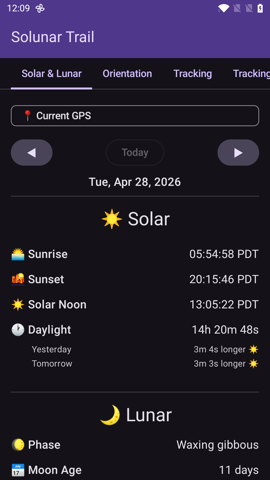
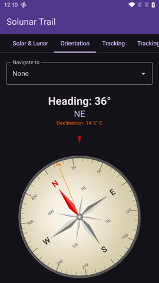
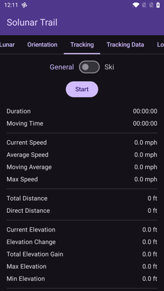
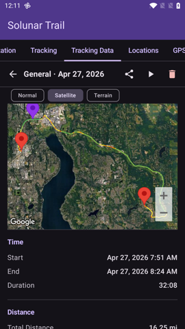
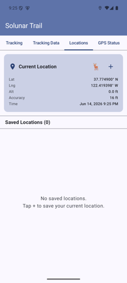
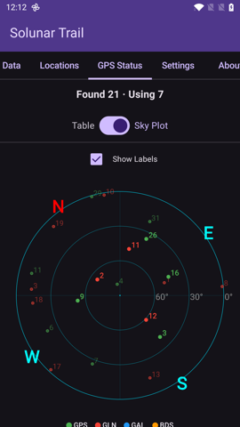
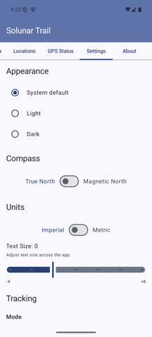
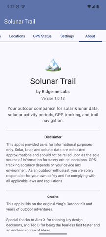

Solunar Trail is an outdoor companion for solar and lunar data, solunar activity periods, saved places, GPS satellite status, compass / orientation tools, and activity tracking.
Getting Started
Open the app and grant location permission when prompted.
Use the tab bar at the top (scroll the tabs sideways to see more), or swipe left/right on the page, to switch between sections.
For best GPS results, use the app outdoors with a clear view of the sky.
The pages, in order, are: Solar & Lunar · Orientation · Tracking · Tracking Data · Locations · GPS Status · Settings · About.
Safety note: Solunar Trail is informational only. Do not rely on it as your only source for navigation, weather, emergency communication, or safety-critical decisions.
Solar & Lunar
Shows sun and moon information for your current location (or a saved location), including solunar activity periods.

Solar & Lunar tab — daily sun/moon timings and solunar windows.
Major periods are based on moon overhead and underfoot timing.
Minor periods are based on moonrise and moonset timing.
Dawn/dusk overlap may indicate a stronger activity window.
The star rating summarizes the day's expected solunar activity.
Use the date arrows to look at past or future days.
Orientation
Compass heading, device sensor readings, and an optional "Navigate to" picker.

Orientation tab — compass with optional bearing to a saved location.
Pick any saved location from the Navigate to dropdown to see its bearing and distance.
Magnetic declination for your location is shown next to the heading.
Switch between True North and Magnetic North in Settings → Compass.
Compass accuracy depends on your device sensors and nearby magnetic interference. Move away from metal/electronics and recalibrate if the heading looks wrong.
Tracking
Records your route and activity stats locally on your device.

Tracking tab — Start to begin recording, then live stats appear.
Pick the tracking mode in Settings if needed (General or Ski).
Tap Start to begin recording.
Use Pause and Resume to temporarily stop/resume the timer and GPS collection.
Tap Stop to finish, then choose Save or Discard.
Lap / Segment Markers (General mode)
Tap ⛳ Lap to drop a segment boundary during a recording.
A live Segments count appears after the first lap.
Per-segment stats include distance, elevation gain, duration, moving time, and average moving speed.
If you tap Lap again before a new GPS point is captured, the app asks you to move a bit before the next lap instead of creating an empty segment.
Tracking Data
Browse, replay, edit, export, or delete your saved tracks.

Tracking Data tab — expanded track with route map, stats, and actions.
Tap a track to expand it and see route stats: distance, duration, moving time, elevation, speed, GPS point count, and a per-segment breakdown when markers exist.
Replay the track on the map at adjustable speed (with pause/play).
Export GPX to share with other mapping/GPS tools (segment markers are exported as GPX waypoints).
Edit Segments lets you add, remove, or clear segment markers on an already-saved track.
Trim lets you cut unwanted points off the start or end of a recording.
Delete removes the recording.
Editing Segments
Use the slider to choose a point along the track.
Add a marker at the selected point, Remove Nearest, or Clear All.
Markers divide the track into sections without changing the recorded route.
Trimming a Track
Use the start/end sliders to choose how much of the recording to keep.
Reset restores the full original range; Save Trim writes the trimmed version.
Locations
Saved positions for repeat outdoor spots — trailheads, overlooks, stands, camps, or fishing areas.

Locations tab — current GPS at the top, saved places below.
Tap + to save your current GPS position with a custom title and notes.
Tap 🦌 for a quick-save Game Sighting (auto-named with timestamp).
Tap a saved location to expand its details and access actions.
Edit the title, notes, or lock state; 📋 Copy the coordinates; GPS Update to refresh from your current fix (unless the location is locked).
Switch the embedded map between Normal / Satellite / Terrain.
Saved locations also appear in the Solar & Lunar location picker and the Orientation "Navigate to" dropdown.
GPS Status
Live satellite information from the device's GNSS receiver.

GPS Status tab — Sky Plot showing satellites by constellation, with elevation rings.
Header shows satellites Found and Using counts.
Switch between Table (per-satellite list with constellation, SNR, and used-in-fix flag) and Sky Plot (polar plot with azimuth/elevation rings) via the toggle, or set the default in Settings → GPS View.
The Sky Plot has an optional Show Labels toggle.
Settings

Settings tab — appearance, units, tracking, GPS, and more.
Appearance: Theme (System / Light / Dark) and Text Size adjustment.
Compass: True North or Magnetic North.
Units: Imperial or Metric.
Tracking: Mode (General / Ski) and, in Ski mode, the Lift Detection Range.
GPS:
Min Distance Filter — minimum movement to trigger a GPS update during tracking.
Smart Filter — Off or Smart (starts at 0 m and ramps up to the configured value once tracking stabilizes).
Stationary Update Interval — how often to request location when you're not moving (2 s / 4 s / 8 s / 16 s / Off).
Auto-save Interval — periodically save tracking data to protect against process death (5 / 10 / 15 / 30 min / Off).
Max Replay Duration — hides replay speeds that would exceed this duration.
OEM Battery Settings: When enabled, the battery-optimization step also tries the manufacturer-specific battery page (e.g. OxygenOS) for whitelisting.
GPS View: Default for GPS Status — Table or Sky Plot.
⭐ Rate This App and Reset to Defaults are at the bottom.
About
App version, disclaimer, credits, attribution, and quick links to the User Manual and Privacy Policy.

About tab — version info and project credits.
Maps and GPX Export
Map views use Google Maps to display locations and tracks. Saved tracks can be exported as GPX files for use in other mapping or GPS tools.
Privacy and Data
Solunar Trail stores saved locations, preferences, and recorded tracks locally on your device. It does not include analytics, advertising, or crash reporting SDKs. See the Solunar Trail Privacy Policy for details.
Troubleshooting
No GPS fix: go outdoors, enable device location, and wait for a clear fix.
Tracking looks stationary: your device may not have received a new GPS point yet; move a short distance and wait for the next fix.
Compass seems wrong: move away from metal objects/electronics and recalibrate the device sensors.
Map does not load: check network connectivity. Google Maps tiles require network access.
Tracking stops in the background: enable the OEM Battery Settings step in Settings and whitelist Solunar Trail in your phone's battery optimization page.